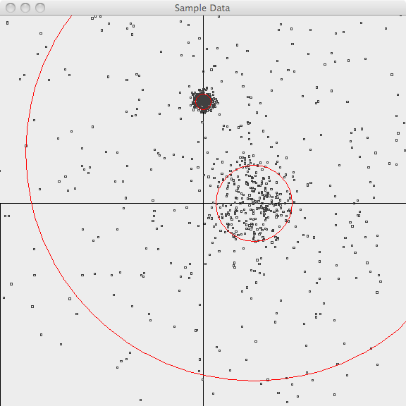
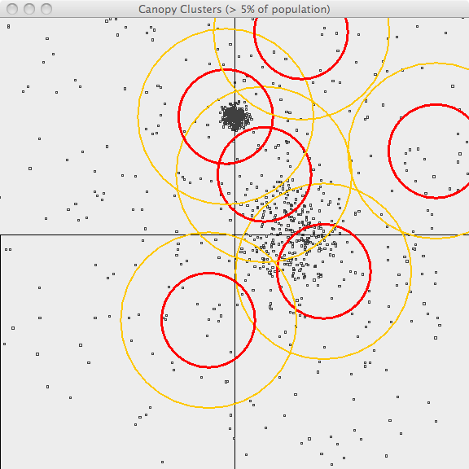
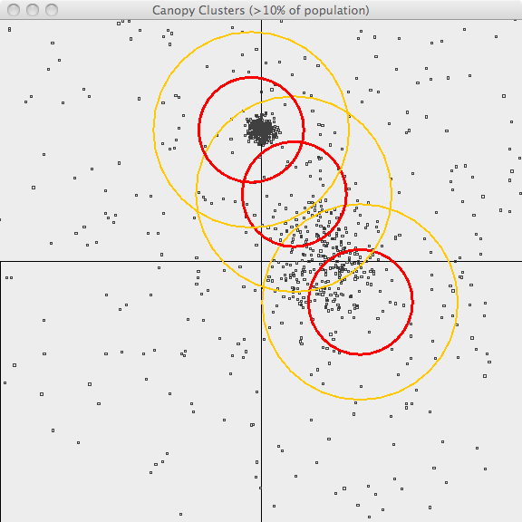

Canopy Clustering is a very simple, fast and surprisingly accurate method for grouping objects into clusters. All objects are represented as a point in a multidimensional feature space. The algorithm uses a fast approximate distance metric and two distance thresholds T1 > T2 for processing. The basic algorithm is to begin with a set of points and remove one at random. Create a Canopy containing this point and iterate through the remainder of the point set. At each point, if its distance from the first point is < T1, then add the point to the cluster. If, in addition, the distance is < T2, then remove the point from the set. This way points that are very close to the original will avoid all further processing. The algorithm loops until the initial set is empty, accumulating a set of Canopies, each containing one or more points. A given point may occur in more than one Canopy.
Canopy Clustering is often used as an initial step in more rigorous clustering techniques, such as K-Means Clustering . By starting with an initial clustering the number of more expensive distance measurements can be significantly reduced by ignoring points outside of the initial canopies.
Looking at the sample Hadoop implementation in http://code.google.com/p/canopy-clustering/ the processing is done in 3 steps:
The points are then clustered into these final canopies when the model.cluster(inputDRM) is called.
Some ideas can be found in Cluster computing and MapReduce lecture video series [by Google(r)]; Canopy Clustering is discussed in lecture #4 . Finally here is the Wikipedia page .
The following images illustrate Canopy clustering applied to a set of randomly-generated 2-d data points. The points are generated using a normal distribution centered at a mean location and with a constant standard deviation. See the README file in the /examples/src/main/java/org/apache/mahout/clustering/display/README.txt for details on running similar examples.
The points are generated as follows:
In the first image, the points are plotted and the 3-sigma boundaries of their generator are superimposed.

In the second image, the resulting canopies are shown superimposed upon the sample data. Each canopy is represented by two circles, with radius T1 and radius T2.

The third image uses the same values of T1 and T2 but only superimposes canopies covering more than 10% of the population. This is a bit better representation of the data but it still has lots of room for improvement. The advantage of Canopy clustering is that it is single-pass and fast enough to iterate runs using different T1, T2 parameters and display thresholds.

| Parameter | Description | Default Value |
|---|---|---|
'distanceMeasure |
The metric used for calculating distance, see Distance Metrics | 'Cosine |
't1 |
The "loose" distance in the mapping phase</code> | 0.5 |
't2 |
The "tight" distance in the mapping phase</code> | 0.1 |
't3 |
The "loose" distance in the reducing phase</code> | 't1 |
't4 |
The "tight" distance in the reducing phase</code> | 't2 |
val drmA = drmParallelize(dense((1.0, 1.2, 1.3, 1.4), (1.1, 1.5, 2.5, 1.0), (6.0, 5.2, -5.2, 5.3), (7.0,6.0, 5.0, 5.0), (10.0, 1.0, 20.0, -10.0)))
import org.apache.mahout.math.algorithms.clustering.CanopyClustering
val model = new CanopyClustering().fit(drmA, 't1 -> 6.5, 't2 -> 5.5, 'distanceMeasure -> 'Chebyshev)
model.cluster(drmA).collect